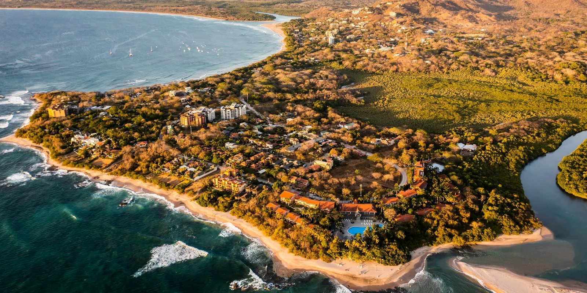

Dóndetrabajamos
Diseñamos y firmamos proyectos en cualquier parte de Costa Rica. Cada página reúne lo que importa antes de construir en ese lugar: la lluvia, el sol, el viento, los permisos y el viaje desde el aeropuerto.

Radiación solar al año, kWh/m²150018502200
| Pueblo | Cantón | Lluvia al año | Época seca | Tardes más calientes | Radiación al año | Desde el aeropuerto de Liberia | Desde el aeropuerto de San José |
|---|---|---|---|---|---|---|---|
| Guanacaste | |||||||
| Tamarindo | Santa Cruz | 1741 mm | diciembre a abril | 35 °C, abril | 2080 kWh/m² | 1 h 25 min | 4 h 55 min |
| Playa Grande | Santa Cruz | 1726 mm | diciembre a abril | 34 °C, abril | 2089 kWh/m² | 1 h 20 min | 5 h 5 min |
| Playa Negra | Santa Cruz | 1792 mm | diciembre a abril | 35 °C, abril | 2080 kWh/m² | 1 h 35 min | 4 h 55 min |
| Flamingo | Santa Cruz | 1755 mm | diciembre a abril | 34 °C, abril | 2081 kWh/m² | 1 h | 4 h 50 min |
| Playas del Coco | Carrillo | 1694 mm | diciembre a abril | 34 °C, abril | 2097 kWh/m² | 30 min | 4 h 15 min |
| Papagayo | Liberia | 1793 mm | diciembre a abril | 34 °C, abril | 2097 kWh/m² | 55 min | 4 h 45 min |
| Liberia | Liberia | 1779 mm | diciembre a abril | 33 °C, abril | 2091 kWh/m² | 15 min | 3 h 35 min |
| Nosara | Nicoya | 2070 mm | diciembre a abril | 35 °C, abril | 2004 kWh/m² | 2 h 20 min | 4 h 50 min |
| Sámara | Nicoya | 2091 mm | diciembre a abril | 35 °C, abril | 2082 kWh/m² | 2 h 15 min | 4 h 40 min |
| Sur de la península de Nicoya | |||||||
| Santa Teresa | Puntarenas | 2841 mm | diciembre a marzo | 30 °C, febrero | 2036 kWh/m² | 3 h 25 min | 5 h 25 min |
| Pacífico central | |||||||
| Jacó | Garabito | 2757 mm | enero a marzo | 28 °C, marzo | 2011 kWh/m² | 3 h 30 min | 1 h 40 min |
| Pacífico sur | |||||||
| Dominical | Osa | 3765 mm | enero a marzo | 29 °C, marzo | 1993 kWh/m² | 5 h 35 min | 3 h 40 min |
| Uvita | Osa | 2751 mm | enero a marzo | 28 °C, marzo | 1925 kWh/m² | 5 h 50 min | 4 h |
| Caribe | |||||||
| Puerto Viejo | Talamanca | 2940 mm | No hay, llueve todos los meses | 28 °C, junio | 1781 kWh/m² | 7 h 40 min | 4 h 45 min |
| Valle Central | |||||||
| Escazú | Escazú | 1994 mm | diciembre a marzo | 27 °C, abril | 1737 kWh/m² | 3 h 45 min | 25 min |
| Santa Ana | Santa Ana | 2142 mm | diciembre a marzo | 28 °C, abril | 1755 kWh/m² | 3 h 40 min | 25 min |
| Atenas | Atenas | 2307 mm | diciembre a marzo | 31 °C, abril | 2028 kWh/m² | 3 h 20 min | 35 min |
| Heredia | Heredia | 2384 mm | febrero a marzo | 27 °C, abril | 1988 kWh/m² | 3 h 50 min | 20 min |
Lluvia: climatología CHIRPS (CHPclim v2, Climate Hazards Center, UC Santa Barbara). Temperatura y viento: la más cercana de 12 estaciones meteorológicas, año típico 2011 a 2025 (Climate.OneBuilding.org TMYx, a partir de observaciones de la NOAA), con la temperatura ajustada por altitud. Días de lluvia fuerte: NASA POWER (MERRA-2), 2001 a 2020. Sol: calculado para las coordenadas del pueblo. Altitud: SRTM. Carreteras y lugares: OpenStreetMap. Datos reunidos en octubre de 2026.